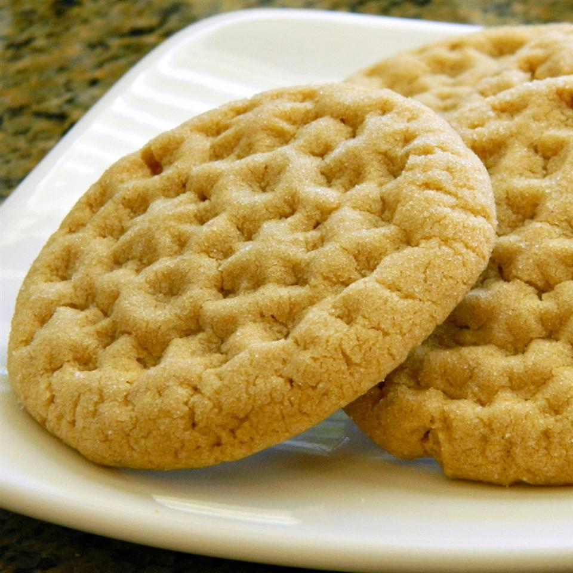

Cookie Butter Cookies

I love cookie butter! I was able to find a way to make cookie butter cookies. I could not find any recipe,
so I am glad I can share this recipe with the world.
You can find cookie butter at Trader Joe's; they also sell cookie cocoa butter.
You can also stuff the cookies with leftover cookie butter by putting 1/2 teaspoon portions of cookie butter on a cookie sheet,
freezing them for 30 minutes, and then rolling cookie dough around them!
Per Serving: 201 calories; protein 2.5g; carbohydrates 25g; fat 10.5g; cholesterol 15.3mg; sodium 123.7mg.
Ingredients
- ¾ Cup Butter, Softened
- ¾ Cup Brown Sugar
- ¾ cup white sugar
- ½ cup cookie butter
- ½ cup peanut butter
- 2 cups all-purpose flour
- 1 egg
- ½ teaspoon baking soda
- ½ teaspoon baking powder
- ¼ teaspoon salt
- ⅓ cup white sugar
Steps
- Preheat the oven to 350 degrees F (175 degrees C). Line a baking sheet with parchment paper
- Beat butter, brown sugar, and 3/4 cup white sugar with an electric mixer in a large bowl until smooth. Add cookie butter and peanut butter; beat until fluffy.
Mix flour, egg, baking soda, baking powder, and salt into butter mixture until dough comes together. Roll dough into teaspoon-size balls.
- Spread 1/3 cup sugar into a shallow dish. Roll dough balls in sugar to coat and arrange onto the prepared baking sheet.
Press the top of dough balls twice with a fork in a crosshatch shape.
- Bake in the preheated oven until golden brown, about 12 minutes.